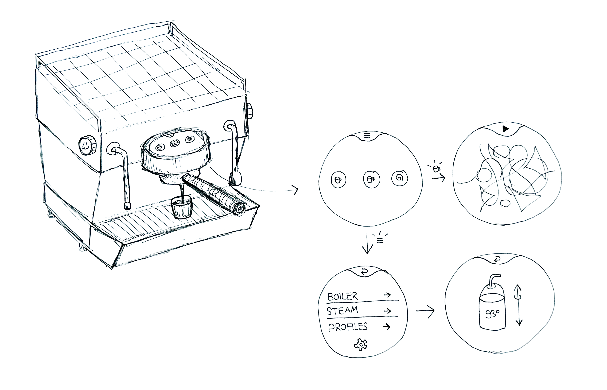
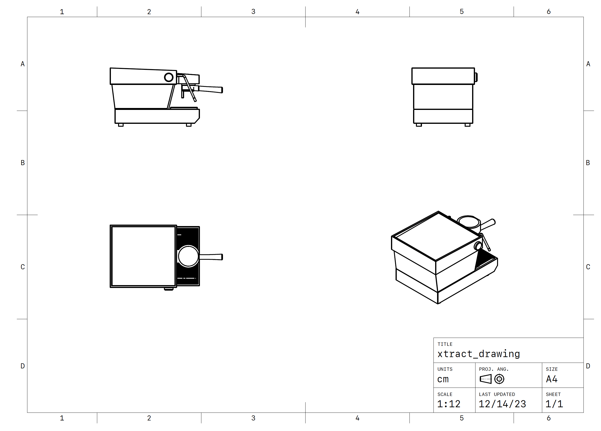

The goal of the “xtract” project was to enhance the accessibility of the
espresso extraction process for end-users. By creating a prototype using p5.js and a 3D render of a
coffee
machine, I aimed to visualize key extraction parameters such as yield amount, brew pressure, and
pre-infusion in real-time. The ultimate objective was to prove the concept of making the intricate
brew process more comprehensible, user-friendly and essentially visually interesting.
In the future, it should be possible to store each extraction in the end of every brew. The
generated visual can be accessed via a "brew gallery" on the machines UI. By pressing on one
specific extraction, the
whole brew process gets reproduced with the exact parameters used.
Both the visuals and parameter form displayed on the prototype above, will be part of the screen
which is located on top of the group head of the coffee machine.
The following 3D Model was created using pen and paper, Shapr3D on iPad, Blender and Substance
Painter. While the visualisazion part is the main focus of this project, I found it important to
also demonstrate the machine itself, which will be the medium of the software.
This was my first sketch of Xtract showcasing my idea of incorporating an accessible and innovative
UI to a timeless coffee machine design.

These technical drawings were created using Shapr3D before importing the project into Blender.
